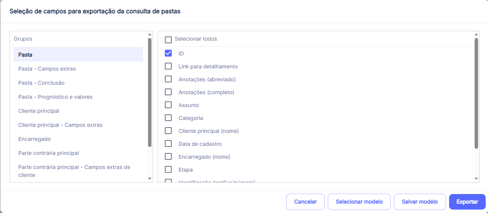

Acessar: Pastas - arquivamento em lote
Cole os IDs das pastas, valide e confirme o arquivamento.
Na exportação de uma consulta, selecione no lado esquerdo em grupos a opção Pasta e, no lado direito, o campo ID. O nome da coluna depende da consulta:
Copie a coluna inteira, com ou sem o cabeçalho.

Só as pastas marcadas serão arquivadas. Desmarque as que não devem ser arquivadas.
Estas pastas já estão arquivadas e não serão alteradas pelo arquivamento em lote.
Estes valores foram ignorados. Confira se são IDs de pastas.
Arquiva várias pastas de uma só vez, a partir de uma lista de IDs de pastas. Só são arquivadas as pastas que ainda não estão arquivadas.
⚠️ Atenção: esta ferramenta arquiva as pastas no sistema. Para desfazer, é preciso desarquivar cada pasta manualmente no Eleven, informando o motivo. Confira a listagem antes de confirmar.